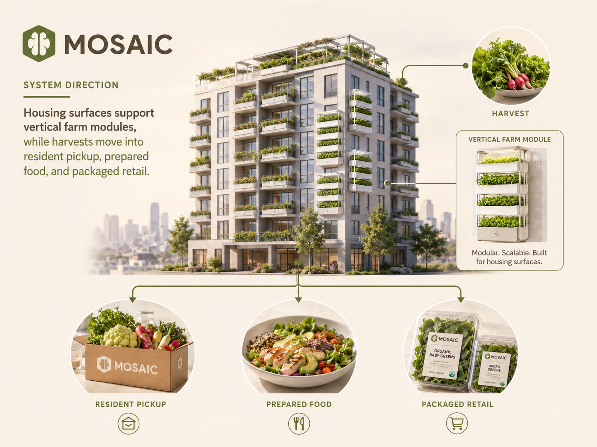
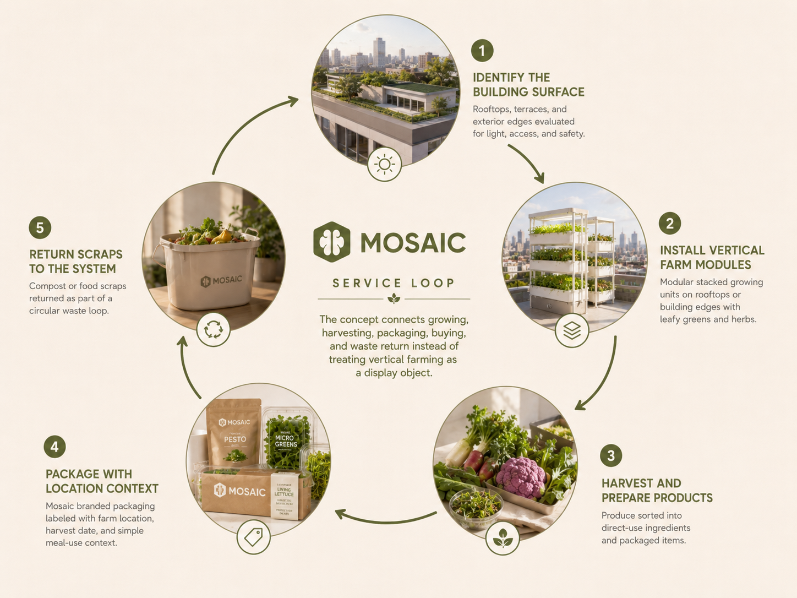

Mosaic
A school project exploring how vertical farming can turn unused urban surfaces into food infrastructure, then connect harvests to packaged products people can buy and trust.

Overview
From green roofs to a food system people can use.
Mosaic began with a question about urban land use. Many city buildings have roofs, balconies, and shared exterior walls that are treated as dead space. At the same time, residents buy food that has traveled through a chain they rarely see.
Our project proposes a vertical farming system for dense neighborhoods. The farm is placed where people already live, then the harvest is translated into two consumer touchpoints: direct farm-to-table access and organic packaged food with clear origin information.
The goal was not to make a futuristic farm. It was to design a service that makes local food easier to notice, buy, and understand inside an urban routine.
Problem
Urban consumers are close to food retailers, but far from food production.
City residents can buy meals quickly, yet the origin of daily produce often stays abstract. Organic food is marketed as a premium choice, but the package usually says little about the place, harvest date, or production method behind it.
The same disconnect appears in building design. Green roofs are often discussed as environmental infrastructure, but they are rarely connected to the food habits of residents. Mosaic treats the building as both a growing site and a public communication surface.
Design question
How might vertical farming help urban residents understand where food comes from, while making packaged organic products feel tied to a real nearby place?

Concept
Grow nearby, package with proof, return value to the neighborhood.
Mosaic combines a farming layer with a product layer. The farming layer uses modular vertical beds that can be installed on rooftops or shared building edges. The product layer turns harvested greens, herbs, and edible flowers into packaged food that carries the farm location and harvest window on the label.
This structure makes the package part of the experience. It does not only protect the food. It explains the route from building to table, so the buyer can connect the product to a specific place rather than a broad claim about being organic.
Vertical farming layer
Modular growing units placed on rooftops, shared terraces, or building edges. The system turns unused surfaces into small production sites.
Packaged food layer
Organic food packs labeled with farm location, harvest date, and suggested use. Packaging becomes a trust interface for city buyers.
Service flow
A loop from building surface to dinner table.
We mapped Mosaic as a service loop rather than a standalone installation. Each step has a different user: building managers approve space, growers maintain production, residents encounter the farm, and buyers meet the brand through packaged food.
Identify the building surface
Rooftops, terraces, and exterior edges are evaluated for light, access, and maintenance safety.
Install vertical farm modules
Crops are selected for short growth cycles and packaging value, such as leafy greens, herbs, and garnish plants.
Harvest and prepare products
Produce is sorted into direct-use ingredients and packaged items for nearby residents or local stores.
Package with location context
Labels show where the food was grown, when it was harvested, and how it can be used in a simple meal.
Return scraps to the system
Food waste can become compost input where the building has suitable maintenance support.

Packaging strategy
The package teaches the food story at the moment of purchase.
The packaged-food direction focuses on products that make sense for short-distance distribution. Instead of treating organic as a broad marketing word, the packaging gives practical proof: the farm site, harvest date, crop type, and a meal suggestion.
This is where the name Mosaic becomes useful. Each food pack represents one tile in a neighborhood food system. The full picture is not one large farm outside the city. It is many small growing sites connected through consistent packaging and service rules.
mosaic-video.mp4 with your uploaded Mosaic video file.
Design process
Translating an environmental idea into user-facing decisions.
The design process moved from food-system framing to touchpoint design. We first defined the gap between urban residents and food production. Then we mapped where residents would actually encounter the system: the building facade, the pickup point, the package, and the recipe cue.
My work focused on making the concept understandable from a user and marketing perspective. The key task was to explain why someone should care about vertical farming when they are simply buying lunch or picking up groceries after school or work.
The final direction uses the farm as evidence, the package as communication, and the meal as the point where the system becomes useful.
Outcome
A food concept that connects building design to everyday eating.
Mosaic presents vertical farming as a neighborhood service, not a standalone sustainability symbol. The project links infrastructure, brand, and consumption so that residents can see how urban farming affects what they buy.
The strongest part of the proposal is the connection between farm visibility and packaged food trust. A rooftop garden may attract attention once, but a labeled product can carry that story into repeated purchase decisions.

Reflection
Food design needs operations, not only imagery.
Mosaic helped me understand that food-system design becomes convincing when the service details are clear. A vertical farm can look appealing, but the concept becomes usable only when maintenance, packaging, purchase, and trust are designed together.
If I continued this project, I would prototype one product label and one pickup flow, then test whether people understand the farm-to-table connection without a verbal explanation.
Built with
- Project
- Mosaic, a school project about vertical farming, farm-to-table access, and organic packaged food.
- My contribution
- UX research framing, web page structure, food-system narrative, and marketing interpretation.